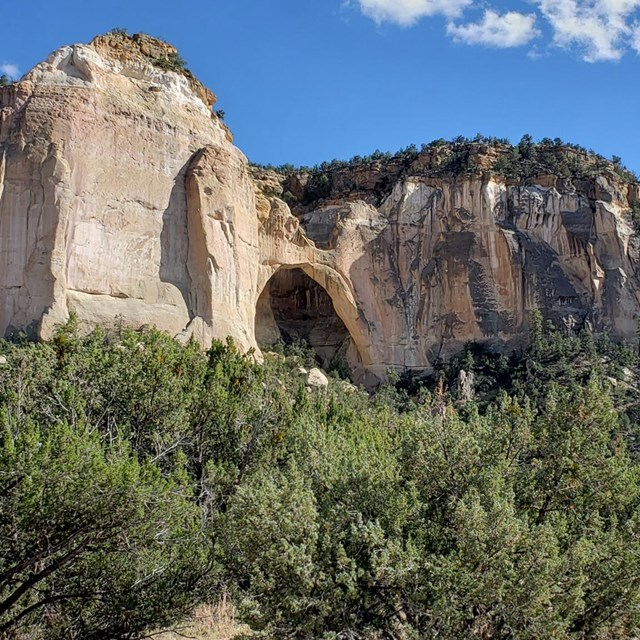

The landscape of the El Malpais National Monument consists of sandstone bluffs, ice caves, old lava flows, and lava tubes. When early Spanish explorers arrived at El Malpais in search of gold, they were instead met with treacherous black lands that they found difficult to navigate. These explorers hence named these lands “badlands”, or El Malpais. Yet, Native American tribes like the Zuni and Acoma, among others have been able to make these “badlands” their home.
The Acoma Pueblo, whose ancestors lived in the region long before the Spanish arrived, settled in El Malpais possibly as early as A.D. 1050. Today, their reservations along with that of the Laguna Pueblo lie to the east of the El Malpais. To the west of the El Malpais lie the reservations of the Zuni Tribe and the Ramah Navajo. The reason for the displacement of these tribes from their original settlements in El Malpais is due to the eruptions and lava flows that occurred as recently as 700 years ago. Still, El Malpais is a land of great cultural significance to these tribes, who keep the land alive through their spiritual and physical presence. These tribes continue to use the El Malpais lands for gathering herbs and medicine, paying respect, and renewing ties, as well as other religious ceremonies.
The El Malpais National Monument is significant in a political sense too for Native Americans. After free exercise claims by Native American tribes on this land, Congress decided to designate the El Malpais lava flows as a national monument under the public trust doctrine, while stating that “the land shall not be placed in trust for the Indians” and that these tribes would instead have non exclusive use of the land for religious and cultural purposes. It also allowed the Secretary to close off certain areas upon request by a tribe if they wished to use the land for traditional religious practices from time to time. This is just one of a few approaches Congress has taken to Native American free exercise claims at sacred sites on public lands.
The National Park Services hopes to manage this monument while cooperating with the tribes that utilize these lands. Some of the ways in which they wish to do this is through consulting tribes in the development of interpretive messages about them, the use of Native American names for different locations in the Monument, as well as by limiting visitor access to religious sites, and if necessary, completely closing off sites on request by tribes.
El Malpais are lands that have deep past significance as well as present significance to several Native American tribes like the Acoma Pueblo, the Laguna Pueblo, the Zuni tribe, and the Ramah Navajo. The El Malpais National Monument is also one of the many examples of how land Native American tribes and communities have tried advocating for their right to use sacred sites on federal lands and how the government has responded to these claims.
We suggest that you visit the El Malpais National Monument and learn about its cultural and historical significance, especially through a Native American lens. We stress that visitors treat these lands with respect as well as avoid trespassing lands that are closed off for certain religious ceremonies of the tribes that use this land. Often, it is imperative that these ceremonies are private.
Google Maps Link